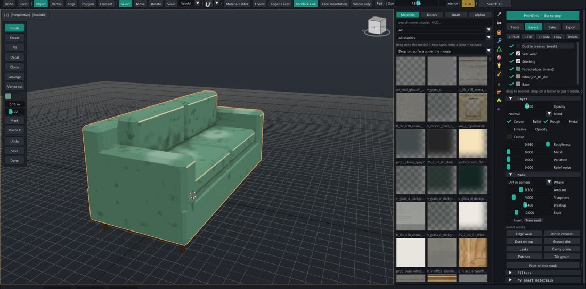
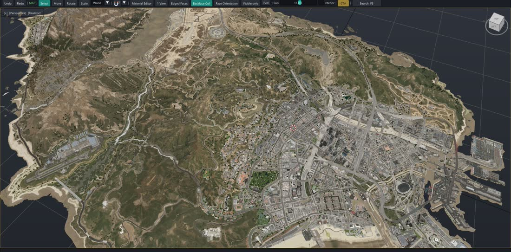
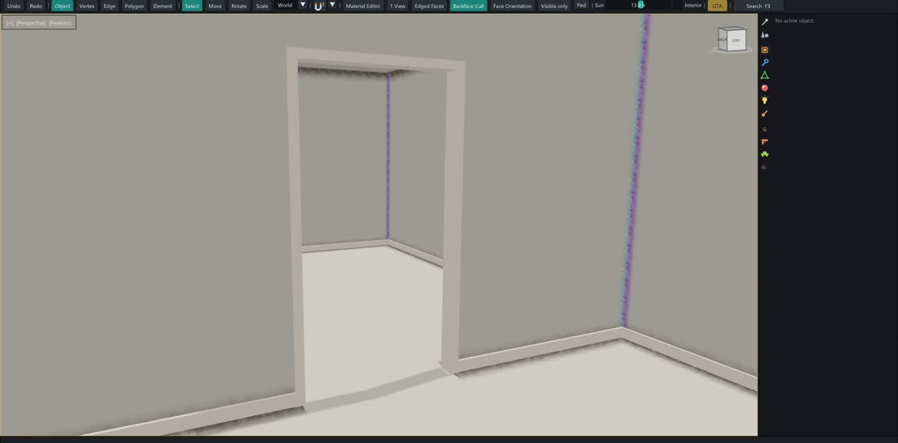

A free 3D modeller made for GTA V and FiveM. Build a building, unwrap it, dress it with the game's own shaders, then place it on the real map and export a working resource.
Cube projection at true size, a UV editor with islands, packing and texel density, and a library of more than 6,000 materials taken from the game, each with its own shader and parameters.
normal_spec, glass_env, decal, emissive…
Exports exactly what the game reads
Molo Paint · Layers2048 × 2048

Paint your textures
Layers, folders, smart materials and smart masks, brushes, decals and baking, on the model itself. Start from a GTA fabric, wear the edges, paint the seams, add dust in the creases.
Edge wear, dirt in corners, dust on top, leaks
Normal, AO and colour bake from a high-poly
DDS export with mipmaps, ready for the game
MAP · HD around the camera20,000+ entities

Model right on the map
MAP mode streams the whole of Los Santos and Blaine County from your game files. Every modelling tool works there: build a plot in place, edit a game model, open an interior, then save the .ymap and .ytyp.
Uses your own GTA V install, nothing is shipped
Saves a map resource ready for FiveM
MLO Room Builderjoined door frames

MLO rooms build themselves
Draw the plan, and the rooms, portals, door frames, skirting and dirt follow. Connected rooms share one door lining through the wall.
Shell in the limbo room, collision on room 1
Five frame styles, windows with sills
Weapon Forge
Any model becomes a GTA weapon on a game donor's skeleton: muzzle moved, metas cloned, /give command written.
Vehicle Forge
Finds the four wheels, fits your car on a donor like sultan2, writes the .yft, handling and /spawn.
Sculpt
Draw, inflate, smooth, pinch and grab on any mesh, then clean it for the game.
Game lights
Point, spot and capsule lights with GTA's own values, Sollumz-compatible.
FiveM export
One key (F10) writes .ydr, .ytd, .ybn and the fxmanifest, checked by loading them back.
Send to my server
Push the resource straight to your test server and restart it.
Video tutorials
Learn it in a few minutes
Short films recorded in the app itself, one topic each, in the order a new user needs them.
01ModelingShift + move copies, pulling edges, Bridge, the right-click menu02SnapsCorners, edges, faces, contact placement03NavigationGame-style camera and the view cube04Materials and UVsDrag and drop materials, unwrap05MLO Room BuilderRooms, connected doors, frame styles06GTA lightsPoint, spot, capsule, Sollumz properties07MAP modeThe whole map, HD around the camera, placing props10Modeling on the mapEvery tool in MAP mode, game models edited in place11Weapon ForgeA model becomes a GTA weapon12Vehicle ForgeA car model becomes a FiveM vehicle08Best of allWhat comes from 3ds Max, Blender and the GTA V tools
GTA scale
Everything sized to the ped
Auto scale reads the object's name (chair, tabouret, door, counter…) and brings it to the height props have in the game, scaled from its base so it stays on the floor.
Object
Name it…
Height
Ped
ped, person
1.818 m
Door
door, porte
2.300 m
Door handle
handle, poignée
1.127 m
Bar counter
bar_counter
1.067 m
Counter / sink
counter, évier
0.900 m
Desk / table
desk, table
0.800 m
Stool
stool, tabouret
0.750 m
Seat (seat height)
seat, bench
0.455 m
Coffee table
coffee, table_basse
0.429 m
AI 3D models
Tripo is built in
Generate a prop from a picture or a sentence, get two versions (2,500 and 5,000 polys), Smart UV and a 2K texture, and it lands in your scene at GTA scale, ready to retouch and export.